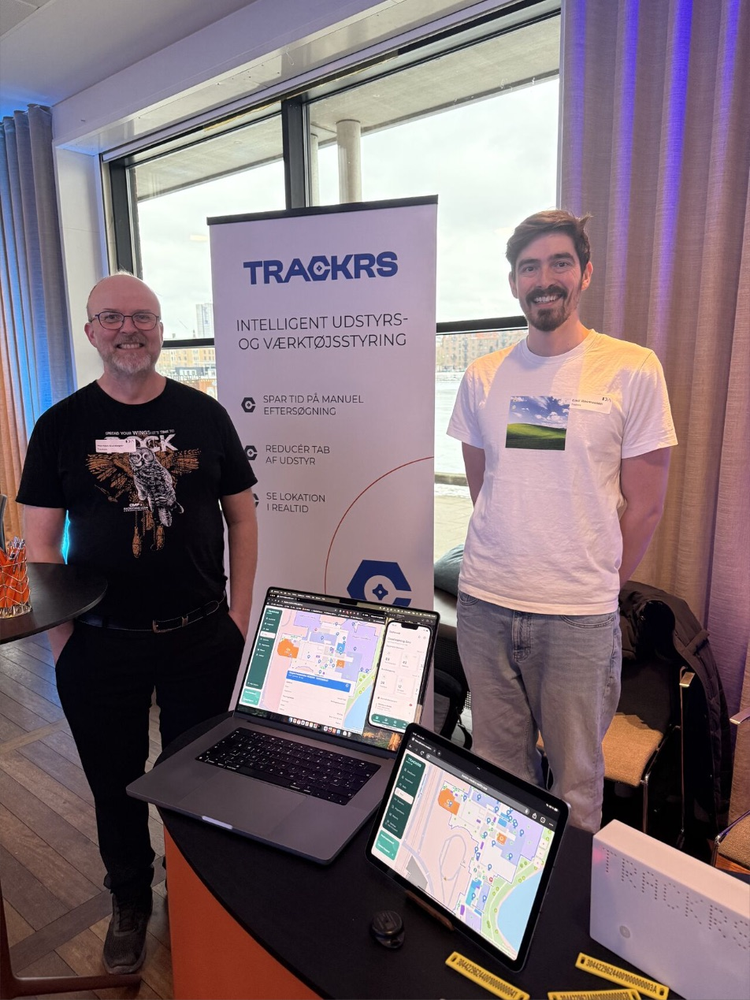
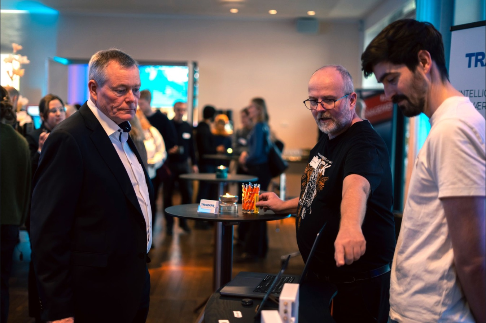
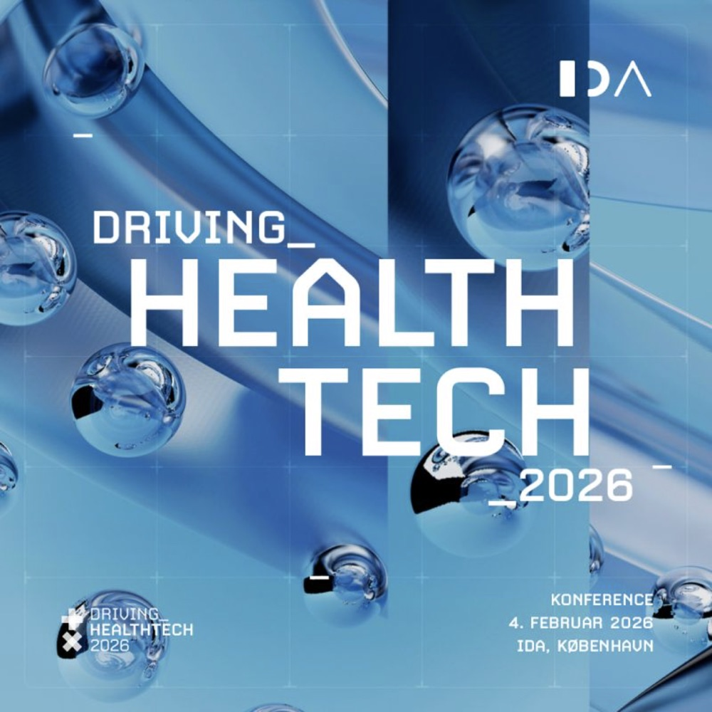

I går, onsdag den 4. februar, stod vi med Trackrs som udstillere på IDA's konference Driving Health Tech 2026 i IDA Conference på Kalvebod Brygge i København. Konferencen samler ingeniører, klinikere, sundhedspersonale, startups og beslutningstagere, der alle har det til fælles, at de vil have ny teknologi til at virke i sundhedsvæsenet. Det var første gang, vi tog Trackrs med ind i den verden, og vi kom hjem med både ømme fødder og fornyet energi.
Hvad vi havde med
Vores stand stod i vandrehallen lige uden for kongressalen, hvor deltagerne samledes i pauserne. Opsætningen var enkel: to roll-ups, et bord, en bærbar og en tablet med Trackrs kørende live. På skærmene kunne besøgende se kortet over en lokation og følge med i, hvor det registrerede udstyr befandt sig, mens vi snakkede.
Trackrs er bygget til håndværkere, der mister værktøj og udstyr på tværs af biler, pladser og lagre. Idéen er den samme i sundhedssektoren, bare med andet udstyr og en anden hverdag: RFID-tags på udstyret, læsere de steder, udstyret bevæger sig igennem, og en app, der viser hvor tingene er i realtid. Vores tre budskaber på roll-up'en var derfor også dem, vi tog udgangspunkt i:
Spar tid på manuel eftersøgning. Tiden, der bruges på at lede efter udstyr, er tid, der ikke bruges på kerneopgaven.
Reducér tab af udstyr. Udstyr, der er registreret og kan findes, forsvinder sjældnere, og bliver det væk, ved man, hvor det sidst blev set.
Se lokation i realtid. Ikke et regneark, der blev opdateret i sidste uge, men et kort, der viser status lige nu.

Dialogerne
Det bedste ved dagen var samtalerne. Vi talte med folk på tværs af fagligheder, fra klinikere og teknikere til andre leverandører, og fik en hel del skarpe spørgsmål om, hvordan sporing af udstyr passer ind i en klinisk hverdag. IDA's næstformand kom også forbi standen og fik demoen, og i åbningen af konferencen blev der sat ord på præcis det, vi hørte hele dagen: teknologi i sundhedsvæsenet skal udvikles sammen med dem, der bruger den i hverdagen.

Foto: IDA, Driving Health Tech 2026.
Sundhedsteknologi skal udvikles i tæt samarbejde med dem, der bruger den i hverdagen. Det er præcis den tilgang, vi tager med Trackrs.
Hvad vi tager med hjem
Det var tydeligt, at viljen og nysgerrigheden er der. Sundhedsvæsenet står med de samme udfordringer som håndværksbranchen, når det gælder udstyr, der skal findes, deles og holdes styr på, bare med højere krav til dokumentation og til, at løsningen ikke forstyrrer arbejdet. Det bekræfter os i, at vi er på rette vej med at bringe vores RFID-sporingsløsning ind i sundhedssektoren, og det har givet os en liste af konkrete ting, vi skal have afklaret, før Trackrs er klar til et hospital.
Tak til IDA for en velorganiseret dag og til alle, der kom forbi standen. Vi glæder os til at følge op på dialogerne.

Vil du høre, hvordan RFID-sporing kan gøre en forskel i din organisation? Kontakt os for en uforpligtende snak.
#trackrs #rfid #sundhedsteknologi #drivinghealthtech2026 #idaconference
"Teknologi er bedst, når den forbinder mennesker og løser reelle problemer."